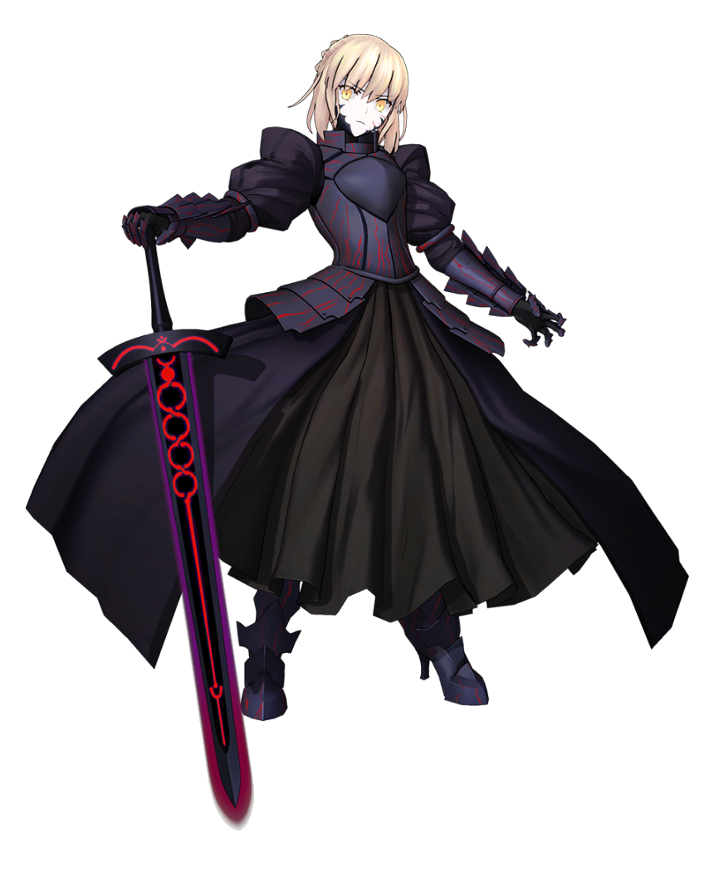
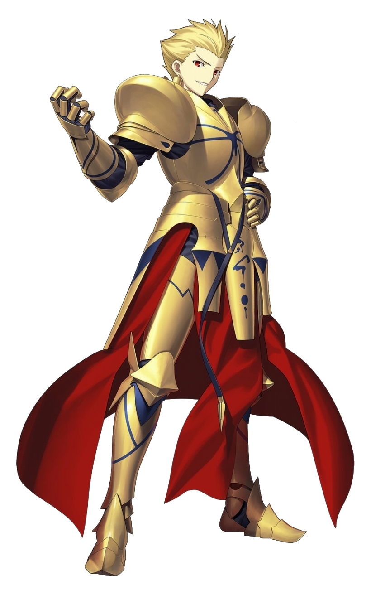
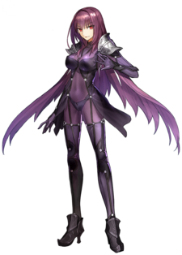
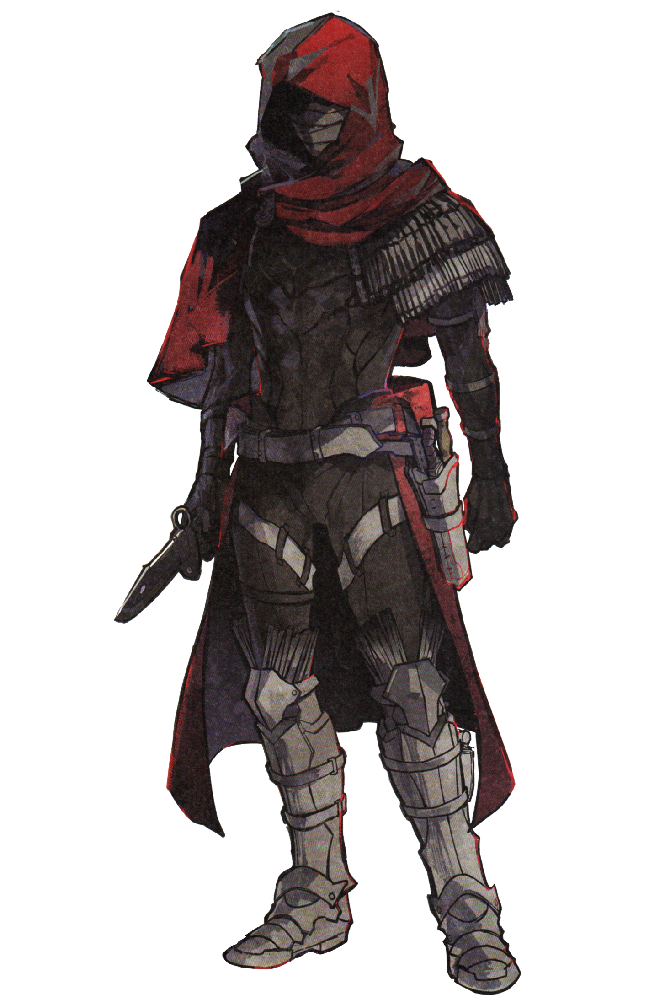
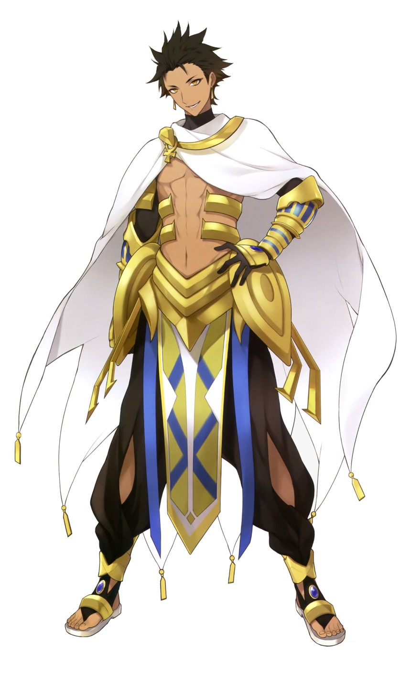

Saber (セイバー, Seibā?), Knight of the Sword (剣の騎士?) and Heroic Spirit of the Sword (剣士の英霊?), is one of the Three Knight Classes among the seven standard Servant classes summoned for the Holy Grail War.
Saber

Archer

Archer (アーチャー, Āchā?), Knight of the Bow and Heroic Spirit of the Bow (弓兵の英霊?), is one of the Three Knight Classes among the seven standard Servant classes summoned for the Holy Grail War.
Lancer

Lancer (ランサー, Ransā?), Knight of the Lance and Heroic Spirit of the Lance (槍兵の英霊?), is one of the Three Knight Classes among the seven standard Servant classes summoned for the Holy Grail War.
Assassin

Assassin (アサシン, Asashin?), Silent Killer and Heroic Spirit of Assassination (暗殺者の英霊?), is one of the Four Cavalry Classes among the seven standard Servant classes summoned for the Holy Grail War.
Rider

Rider (ライダー, Raidā?), Mounted Knight (騎乗兵?) and Heroic Spirit of the Mount (騎兵の英霊?), is one of the Four Cavalry Classes among the seven standard Servant classes summoned for the Holy Grail War.
Caster

Caster (キャスター, Kyasutā?), Magus and Heroic Spirit of Spells and Sorcery (魔術師の英霊?), is one of the Four Cavalry Classes among the seven standard Servant classes summoned for the Holy Grail War.
Berserker

Berserker (バーサーカー, Bāsākā?), Mad Warrior and Heroic Spirit of Berserk Rage (狂戦士の英霊?), is one of the Four Cavalry Classes among the seven standard Servant classes summoned for the Holy Grail War.